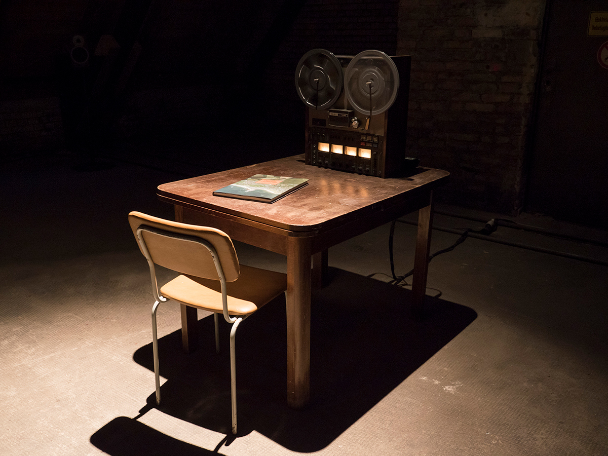

Audiovisual installation, multi-media, mixed media. Reel tape, reel-to-reel player, book, table, light, chair, speakers. 2017. Installation view at Kesselhaus, as part of the «Sound Studies Masterausstellung» group show — Berlin, 2017. Video courtesy of the author.
An audiovisual representation of the comparison data of coastal towns
«An audiovisual representation of the comparison data of coastal towns» is an ongoing project, which creates a separate reality, bringing faraway places together based on their proximity to the world ocean. The piece draws inspiration from Samuel Beckett’s «Krapp’s Last Tape.» Interviews of people of various ages, residing in towns situated along the Black Sea and the North Sea coasts, are the basis of the current state of the installation. Interviewees of different ages represent the towns of Shabla and North Berwick. Each age — e.g. 10, 38, 77 — has its own unique spokesperson, who responds to only one question: how was the past year for you? The indefinite nature of the question encourages interpretation on the part of the interviewee, constructing a literary image of the participating locality.
The piece tackles the issues of an individual’s view of society whether on a personal, communal or national level, one’s self-perception as a subject in a community and one’s self-prescribed societal role. This process exposes the habitual customs of communication in a society, providing a breakdown of a culture’s public interaction practices, while touching upon matters of acceptable self-presentation and a participant’s consciously constructed self-image.
Installation view at Kesselhaus, as part of the «Sound Studies Masterausstellung» group show — Berlin, 2017. Photo courtesy of the author.
The installation juxtaposes the social demographics of each contributing locality (currently the towns of Shabla and North Berwick). The manifold viewpoints spanning each age refract reality creating surreal parallel connecting places thousands of kilometers apart. As if in an alternate reality, the actors of the piece could be neighbors, living on the same street, sharing a garden. The work provides a common ground based on two simple qualities — a participant’s age and the surrounding topography — bridging people’s fates and breaking apart the status quo superimposed by the current state of society, dissolving racial prejudice or national identity. The thus created model of the world focuses on a divide of the real (that which is capable of being perceived), set in the seaside, with the internal (that which is capable of being experienced), set in the mind and explores how consciousnesses and objective realities connect beyond the physical world. The interviews play out a panoramic spectacle of the influences that the sea, a shared kinetic monument, has on experience.
An abstract rendition of the recordings of the interviews played on a four-channel reel-to-reel machine fulfill the auditory dimension of the piece. The interviews have been transcribed, translated into English and collected in a book, which is available as part of the installation.
Delving deeper, one uncovers ever more fates. Gaining diverse perspectives onto one’s own experiences, assuming a position outside of time, breaking apart the space-time continuum.